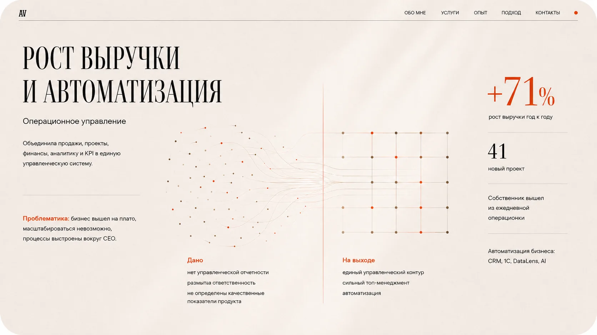
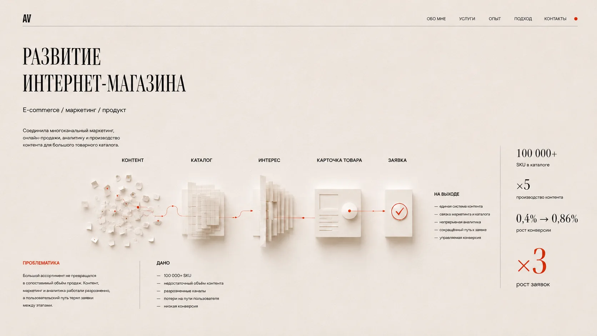
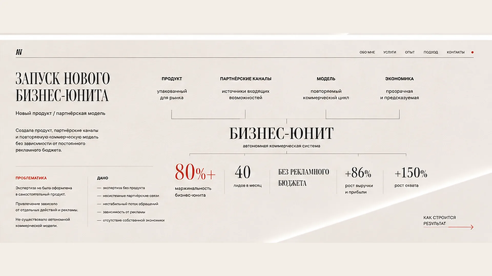
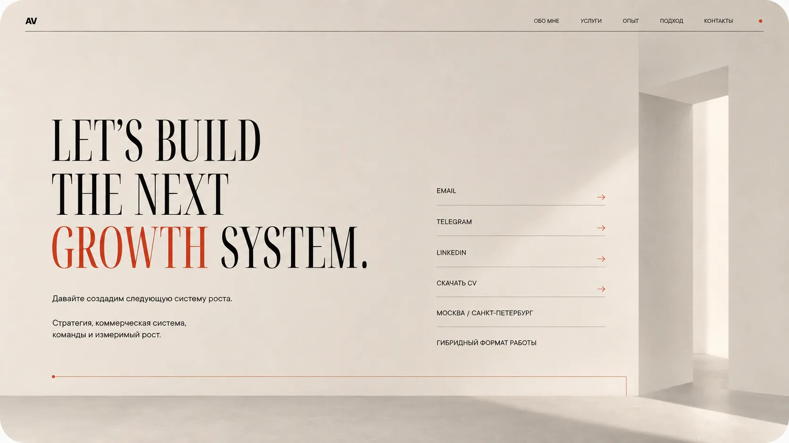

Обо мнеУслугиОпытПодходКонтактыОбсудить рост
Обо мнеУслугиОпытПодходКонтактыОбсудить рост
Алина Васильева — стратегический партнёр
Строю стратегии, коммерческие системы и команды, которые превращают развитие в измеримый рост.

Обо мнеУслугиОпытПодходКонтактыРост выручки и автоматизация
Рост выручки на 71% год к году. 41 новый проект. Собственник вышел из ежедневной операционки. CRM, 1С, DataLens, AI.

Масштабирование направления
Рост оборота в 4,7 раза, рост маржинальной прибыли в 8,3 раза, 8 запусков, 2 тендерные победы, более 40 миллионов рублей в pipeline.

Обо мнеУслугиОпытПодходКонтактыРазвитие интернет-магазина
100 000+ SKU, рост производства контента в 5 раз, рост конверсии с 0,4% до 0,86%, рост заявок в 3 раза.

Запуск нового бизнес-юнита
Маржинальность более 80%, 40 лидов в месяц без рекламного бюджета, рост выручки и прибыли на 86%, рост охвата на 150%.

Обо мнеУслугиОпытПодходКонтактыLet's build the next growth system
Стратегия, коммерческая система, команды и измеримый рост. Москва и Санкт-Петербург. Гибридный формат работы.